This Legion Jewelcrafting leveling guide will show you the fastest and easiest way how to level your LegionJewelcrafting skill up from 1 to 100.
This Legion Jewelcrafting leveling guide will show you the fastest and easiest way how to level your LegionJewelcrafting skill up from 1 to 100.
Jewelcrafting is the best combined with Mining because you can save a lot of gold if you gather the materials instead of buying them.
Legion Jewelcrafting Trainer
First, visit your Jewelcrafting trainer Timothy Jones at Dalaran. Just walk up to a guard in the city, you can ask them where the Jewelcrafting trainer is located.
After you learn Jewelcrafting, pick up the quest  Facet-nating Friends from Tiffany Cartier.
Facet-nating Friends from Tiffany Cartier.
The quest reward is [Legion Jewelcrafter].
Unlocking recipes
Most Jewelcrafting recipes are unlocked by doing quests. These quests are given by one of the NPCs around your trainer.
You should get to level 45 and finish every Jewelcrafting quest before you continue this guide.
There are 24 Jewelcrafting quests in total, they are pretty straightforward, so I will not write down the details of every quest. Some of the quests lead you to dungeons but you can finish every quest easily in a few hours if you start them at 50, otherwise, you will have to wait because later quests have level requirements.
The last quest is  A Personal Touch, this will teach you how to make a necklace specific to your class.
A Personal Touch, this will teach you how to make a necklace specific to your class.
Recipe ranks
Most Legion recipes now have 3 ranks. Higher rank recipes allow you to craft an item for fewer materials, and they stay orange for a lot longer (grants guaranteed skill-ups). Therefore, you should only use rank 3 recipes when you can.
Rank 3 recipes come from different sources like Vendors, World Quests, Reputation, dungeon drops, and even rated battleground wins.
If you hover over the little stars in your spellbook, you can see the source of the next rank for the selected recipe.
Unlocking World Quests
Most of the rank 3 leveling recipes come from World Quests. To get these quests, you must first complete  Uniting the Isles by reaching friendly reputation with every Legion faction. You can get this quest from Archmage Khadgar (requires level 45).
Uniting the Isles by reaching friendly reputation with every Legion faction. You can get this quest from Archmage Khadgar (requires level 45).
If your first character has already completed this, you don't need to grind rep on your alts.
After you unlocked the quests, you also have to level your Legion Jewelcrafting to at least 25 to unlock the profession World quests.
Leveling Legion Jewelcrafting
1 - 35
Draenei characters have +10 Jewelcrafting skill because of their passive  [Gemcutting]. An extra 10 Jewelcrafting skill means recipes stay orange for 10 more points, so you can save a lot of gold by doing lower level recipes for 10 more points.
[Gemcutting]. An extra 10 Jewelcrafting skill means recipes stay orange for 10 more points, so you can save a lot of gold by doing lower level recipes for 10 more points.
Make around 40-45 from any of the recipes below. These will be yellow for the last few points so you won't gain skill points for every craft. You don't have to craft all 20 from one recipe, you can craft different kinds, it depends on which gems are cheaper, or which ones you got from  [Prospecting].
[Prospecting].
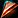 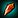 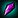 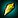 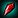
[Masterful Queen's Opal] - 45 x
[Quick Azsunite] - 45 x
[Versatile Skystone] - 45 x [Skystone]
[Jeweled Lockpick] - 45 x
35 - 60
Make 25 from any of these:
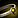 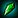 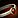 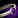 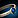
Jabrul should be near your trainer in Dalaran if you finished every Jewelcrafting quest. He sells you the designs for these rings, but you should already have one from questing.
You can buy the rank 2 designs from Tiffany Cartier. She is in the same room as the trainer.
Rank 3 recipe locations:
[Azsunite Loop] - World Quest
[Deep Amber Loop] - World Quest - Azsuna
[Queen's Opal Loop] - World Quest - Stormheim
[Skystone Loop] - Highmountain Tribe - Honored - Sold by Ransa Greyfeather at Thunder Totem in Highmountain.
The world quests you get are randomly generated, so you might not get one right away and have to wait even a few days until one pops up.
60 - 95
These recipes will be green for the last 5 points, so you will probably have to make between 40-45.
Make around 45 from any of these:
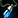 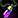 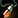 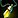
Jabrul should be at near your trainer in Dalaran if you finished every Jewelcrafting quest. He sells you the designs for these necks, but you should already have one from questing. You can buy the rank 2 designs from Tiffany Cartier. She is in the same room as the trainer.
Rank 3 recipe locations:
[Skystone Pendant] - World Quest - Highmountain
[Queen's Opal Pendant] - World Quest - Suramar
[Deep Amber Pendant] - Drops from any creature in the Broken Isles.
[Azsunite Pendant] - World Quest - Azsuna
The world quests you get are randomly generated, so you might not get one right away and have to wait even a few days until one pops up.
95 - 100
IMPORTANT NOTE! You can actually level with previous recipes all the way up to 100, but you usually can't buy that many low level gems. The recipes will be green between 90-100, so you would need a lot of those gems to reach 100, but it would be still cheaper to use them instead of the necks.
There are 12 class-specific necks that you can craft.
5 x [Any Rank 3 Neck recipe you choose] - 10-20 x [Extra Gem], 25 x 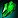 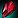 [Blood of Sargeras], 10 x [Infernal Brimstone], 5 x
[Blood of Sargeras], 10 x [Infernal Brimstone], 5 x
4 of the materials are the same for every neck recipe, the only difference is the extra gem. There is a list of rank 3 recipes below where you can see the color of the gem needed for the necks, so you can decide which one you should aim for.
You already learned one for your class when you finished your last Jewelcrafting quest. The rest of the rank 1 recipes are sold by Jabrul.
Rank 2 recipes
Most of them are sold by Tiffany Cartier.
The rest of them can be bought from vendors at the Dalaran Sewers. You will need to farm  Sightless Eye to buy these recipes, so check out my Sightless Eye farming guide if you want to buy any of these recipes below. (You can get the 250 Sightless Eye in about 10 minutes, and each of them cost 250)
Sightless Eye to buy these recipes, so check out my Sightless Eye farming guide if you want to buy any of these recipes below. (You can get the 250 Sightless Eye in about 10 minutes, and each of them cost 250)
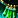 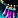
[Twisted Pandemonite Choker] - sold by Matthew Rabis.
[Sorcerous Shadowruby Pendant] - sold by Dazzik "Proudmoore".
Rank 3 recipes
All of these require at least these: 5 x  [Blood of Sargeras], 2 x [Infernal Brimstone], 1 x [Pandemonite], 1 x [Furystone] and the listed extra gems.
[Blood of Sargeras], 2 x [Infernal Brimstone], 1 x [Pandemonite], 1 x [Furystone] and the listed extra gems.
| Item Name | Extra Gem | Recipe Source |
|---|---|---|
| [Vindictive Pandemonite Choker] | 2 x [Pandemonite] | Dropped by Cordana Felsong in Vault of the Wardens (Heroic). |
| [Twisted Pandemonite Choker] | 2 x [Pandemonite] | The Wardens - Exalted - sold by Marin Bladewing at Azsuna. |
| [Subtle Shadowruby Pendant] | 4 x 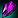 [Shadowruby] | The Nightfallen - Exalted - sold by First Arcanist Thalyssra at Suramar. |
| [Sorcerous Shadowruby Pendant] | 4 x [Shadowruby] | Dropped by Calamir world boss at Azsuna. |
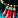 [Raging Furystone Gorget] | 2 x [Furystone] | Spoils of the Worthy chest at the end of Halls of Valor (Heroic). |
| [Grim Furystone Gorget] | 2 x [Furystone] | Dropped in Black Rook Hold (Heroic) - last boss. |
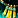 [Righteous Dawnlight Medallion] | 4 x 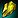 [Dawnlight] | Advisor Melandrus in Court of Stars (Mythic). |
| [Blessed Dawnlight Medallion] | 4 x [Dawnlight] | Waterlogged Cache of Ancient Relics in Maw of Souls (Heroic) - this is the cache at the last boss |
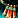 [Intrepid Necklace of Prophecy] | 4 x 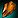 [Eye of Prophecy] | Dropped by Dargrul in Neltharion's Lair (Heroic). |
| [Tranquil Necklace of Prophecy] | 4 x [Eye of Prophecy] | Dropped by Advisor Vandros in The Arcway (Mythic). |
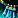 [Ancient Maelstrom Amulet] | 4 x 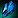 [Maelstrom Sapphire] | Highmountain Tribe - Exalted - Sold by Ransa Greyfeather at Thunder Totem in Highmountain. |
| [Sylvan Maelstrom Amulet] | 4 x[Maelstrom Sapphire] | Dropped by Shade of Xavius in Darkheart Thicket (Heroic). |
I hope you liked this Jewelcrafting leveling guide, congratulations on reaching 100!